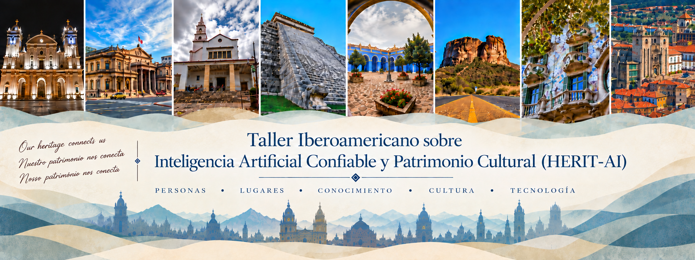

“El hombre no puede vivir sin memoria”
— Augusto Roa Bastos
ACERCA DEL WORKSHOP
El patrimonio cultural involucra la historia, las tradiciones, la identidad y las memorias colectivas de las comunidades. A través de sus manifestaciones tanto tangibles como intangibles, preserva el legado cultural de las sociedades y favorece la transmisión de conocimientos, valores y prácticas a lo largo de las generaciones. En este sentido, desempeña un papel fundamental en fortalecer la identidad cultural, apoyar a educación y promover la conciencia social e histórica. Sobretodo, el patrimonio cultural se trata de preservar la memoria humana y no permitir que las historias, los conocimientos y los valores que definen a las sociedades desaparezcan y asi queden accesibles para las generaciones presentes y futuras.
Recent advances in Artificial Intelligence (AI) are creating new opportunities for documenting, preserving, analyzing, interpreting, managing, and disseminating cultural heritage. However, the use of AI in Cultural Heritage also raises significant risks and challenges. AI systems may reflect and reinforce biases, cultural stereotypes, or imbalances present in the data used to train them. In light of these challenges, HERIT-AI aims to bring together AI researchers and professionals from museums, archives, libraries, archaeology, conservation, digital humanities, and other Cultural Heritage institutions to foster interdisciplinary collaboration and knowledge exchange. Beyond original research papers, the workshop will provide a forum for discussing real-world experiences, case studies, pilot projects, and ongoing initiatives involving the adoption of AI in Cultural Heritage. Los recientes avances en Inteligencia Artificial (IA) están creando nuevas oportunidades para documentar, preservar, analizar, interpretar, gestionar y difundir el patrimonio cultural. Sin embargo, el uso de la IA en el patrimonio cultural también plantea riesgos y desafíos importantes. Los sistemas de IA pueden reflejar y reforzar sesgos, estereotipos culturales o desigualdades presentes en los datos utilizados para entrenarlos. Ante estos desafíos, HERIT-AI tiene como objetivo reunir a investigadores de IA y profesionales de museos, archivos, bibliotecas, arqueología, conservación, humanidades digitales y otras instituciones dedicadas al patrimonio cultural, con el fin de fomentar la colaboración interdisciplinaria y el intercambio de conocimientos. Además de presentar artículos de investigación originales, el workshop ofrecerá un espacio para debatir experiencias del mundo real, estudios de caso, proyectos piloto e iniciativas en curso relacionadas con la adopción de la IA en el patrimonio cultural.
La visión de HERIT-AI es construir una comunidad iberoamericana en la que la IA y el Patrimonio Cultural evolucionen conjuntamente. Al fomentar el diálogo, la cocreación y la colaboración interdisciplinaria, el workshop busca no solo impulsar las aplicaciones de la IA al patrimonio cultural, sino también inspirar el desarrollo de una Inteligencia Artificial más centrada en el ser humano, confiable y socialmente significativa, a través de uno de los ámbitos más valiosos de la humanidad.
LLAMADA DE ARTICULOS
Tipos de Contribuciones
- Artículos de investigación completos (hasta 15 páginas, incluidas las referencias). Contribuciones de investigación originales que presenten métodos, enfoques, sistemas o resultados empíricos novedosos en la intersección de la Inteligencia Artificial Confiable y el Patrimonio Cultural.
- Artículos de investigación cortos (hasta 10 páginas, incluidas las referencias). Contribuciones que presenten un problema de investigación claramente definido y una contribución científica emergente o en desarrollo, incluidos métodos, resultados o hallazgos preliminares.
- Ideas innovadoras (hasta 10 páginas, incluidas las referencias). Ideas innovadoras, nuevas líneas de investigación, enfoques conceptuales y visiones de futuro sobre la Inteligencia Artificial Confiable y el Patrimonio Cultural.
- Resúmenes ampliados (hasta 4 páginas, incluidas las referencias). Ideas en una etapa inicial, proyectos preliminares, prototipos, conjuntos de datos, demostraciones, estudios de caso o iniciativas emergentes. Las contribuciones aceptadas se presentarán como pósteres físicos.
Topicos de interés
- Digitalización inteligente, documentación y preservación a largo plazo de bienes del patrimonio cultural.
- Técnicas de visión por computador para el análisis de obras de arte, reconocimiento de objetos, recuperación de imágenes, evaluación de daños y reconstrucción virtual.
- Procesamiento de lenguaje natural y LLMs para documentos históricos, archivos, colecciones multilingües y extracción de conocimiento cultural.
- Representación del conocimiento, grafos de conocimiento, tecnologías semánticas y razonamiento para el modelado y la integración de información sobre el patrimonio cultural.
- Inteligencia Artificial explicable, confiable y responsable para apoyar la toma de decisiones en museos, archivos, bibliotecas e instituciones dedicadas al patrimonio.
- Conservación, restauración, monitoreo y evaluación de riesgos del patrimonio cultural asistidos por Inteligencia Artificial.
- Inteligencia Artificial generativa y narrativa digital para la educación, la interpretación y la participación del público.
- Experiencias culturales interactivas apoyadas por Inteligencia Artificial. Personalización, accesibilidad y participación cultural inclusiva apoyadas por Inteligencia Artificial.
- Desafíos éticos, jurídicos, organizacionales y sociales asociados con la adopción de la Inteligencia Artificial en el patrimonio cultural.
- Implementaciones en contextos reales, estudios de caso, colaboraciones interdisciplinarias y metodologías de evaluación de sistemas de Inteligencia Artificial aplicados al patrimonio cultural.
- Desinformación, información falsa y narrativas inexactas, sesgadas o engañosas en representaciones del patrimonio cultural generadas o asistidas por Inteligencia Artificial.
Instrucciones para el envío
Los artículos deben estar escritos en inglés, español o portugués y preparados utilizando el formato oficial Springer LNCS. Todas las contribuciones deben enviarse electrónicamente a través de EasyChair. El enlace de envío estará disponible en este sitio web.
Proceedings
Los artículos aceptados se incluirán en los proceedings del workshop.
Se espera que al menos uno de los autores de cada artículo aceptado se
inscriba en el workshop y asista al evento para presentar el artículo.
Nuestro objetivo es seleccionar versiones ampliadas y revisadas de los
artículos aceptados para su publicación en un número especial de una revista
internacional, siempre que se reúna un número suficiente de artículos de alta
calidad. Estas contribuciones pasarán por un segundo proceso formal de
selección para cumplir con los estándares de calidad de la revista.
FECHAS IMPORTANTES
- Fecha límite de envío: 20 de octubre de 2026
- Notificación de aceptación: Por anunciar
- Workshop: 17 de noviembre del 2026
PONENCIA INVITADA
Ponente invitado
Por anunciar.
COMITE ORGANIZADOR
-
Juan Carlos Nieves
(Universidad de Umeå) -
Mariela Morveli Espinoza
(Universidad de Umeå) -
Ulises Cortés
(Universitat Politècnica de Catalunya)
PROGRAMA
Programa del Workshop
El programa será publicado despues del proceso de revisión.
Únete a la comunidad HERIT-AI
Para consultas y oportunidades de colaboración, ponte en contacto con los organizadores del workshop.
Contáctanos →